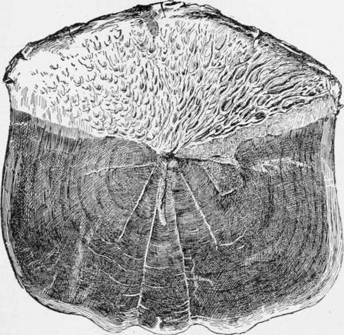

The Tarpon, Or Silver King
Description
This section is from the book "American Game Fishes", by W. A. Perry. Also available from Amazon: American Game Fishes: Their Habits, Habitat, and Peculiarities; How, When, and Where to Angle for Them.
The Tarpon, Or Silver King
The Tarpon has been technically described as Me galop s Atlantic us and Megalops Thrissoides, the latter being used in the excellent compilation known as "The Fisheries and Fishery Industries of the United States," issued by the United States Fish Commission. The Tarpon is therein called Tarpum, and classed under "families related to the Clupcidoe." In this connection, it may be stated that comparatively little is known of the habits of the Tarpon. A search through the Encyclopedia Britannica, or other authorities, will make this fact patent. The authority above quoted is the best with which I am acquainted. It says: "An immense, herring-like fish, which occurs in the Western Atlantic and in the Gulf of Mexico, ranging north to Cape Cod and south at least to Western Brazil. It is somewhat abundant in the West Indies, and stragglers have been taken as far to the eastward as the Bermudas. The sailors' name for this fish, by which name it is also known at Key West, Bermuda, Brunswick, Georgia, and elsewhere, is "Tarpum," or "Tarpon." It is the "Silver Fish" of Pensacola, the "Grand Ecaille" (large scale fish), or "Grandykye," as it is pronounced and sometimes spelled, and the "Savanilla" of Texas.
Mr. Stearns contributes the following notes upon the fish as observed by him: "The Silver Fish, or Grande Ecaille, is common everywhere on the gulf coast. It is an immense and active fish, preying eagerly upon schools of young fry, or any small fish that it is able to receive into its mouth, and in pursuit of which it ascends fresh-water rivers quite a long distance. During September, 1879, I saw large numbers of Silver Fish eight or ten miles up the Apalachicola River, and am told that that was not an unusual occurrence. They go up the Homosassa River in Florida, and several of the Texas rivers, so I have subsequently learned. The Tarpum will take a baited hook, but it is difficult to handle and is seldom landed. The Pensacola seine-fishermen dread it while dragging their seines, for they have known of persons having been killed or severely injured by its leaping against them from the seine in which it was inclosed. Even when it does not jump over the cork-line of a seine, it is quite likely to break through the netting before being landed. I have secured several specimens, the smallest of which weighed thirty pounds, and the largest about seventy-five pounds."
Since the publication of "The Fisheries and Fishery Industries of the United States," in 1884, much valuable literature in connection with the Tarpon has been furnished the periodical press of the country. Yet the ichthyology of the Tarpon is far from complete, and there remain many facts relative to his habits, habitat, etc., to be, and which it is hoped will be, in time, unfolded.
I consider Tarpon-fishing the grandest sport with the rod and reel to be had upon the globe; and the study, therefore, of the ways and peculiarities of the fish is an absorbing one. After taking a Tarpon on light tackle, other forms of angling become tame sport. His magnificent vaults into mid-air, wonderful spurts, and powerful dashes for liberty, allied to his remarkable beauty, quickly converts the tyro in this form of angling into an enthusiast. His weight varies, according to my observations, between fifteen or twenty pounds and one hundred and seventy-five, and in length they reach as much as seven feet and over. Their build indicates great power, and a generous and dainty fare. In shape they are very symmetrical; and in a large and powerful tail, and numerous fins of ample size and sweep, they possess most formidable weapons in a contest for liberty. They are covered with brilliant scales, whose exposed portions are almost one-fourth of the whole. When detached, the part of the scale which gives the fish its beautiful luster looks as though it had been dipped in molten silver. It is this remarkable brilliance which has won the Tarpon its designation of the "Silver King." The bronze and golden tints on the sides of the fish, noticeable only a few hours after being landed, add much to his beauty.
Scale Of Tarpon', Actual Size.
While the Tarpon may range in the latitude stated above, so far the sportsmen who have gone in pursuit of him with rod and reel have confined their efforts almost exclusively to the waters of the southwestern gulf coast of Florida. There he is found in comparative abundance; and that coast is generally looked upon and conceded to be his annual feeding-grounds. To Mr. W. A. Wood, of New York City, is generally credited the taking of the first Tarpon of over one hundred pounds weight, with rod and reel. The capture took place in these waters, and occurred in March, 1885. The friends of Mr. Samuel H. Jones, of Philadelphia, however, claim for him priority, placing the first catch with the rod in Indian River Inlet, on the east coast of Florida, during the winter of 1880 and 1881. To whomsoever the honor belongs, the dates quoted will demonstrate how young the sport is. Yet these gentlemen have had numerous emulators; and each year the number of Tarpon taken is on the increase. Every season the ranks of the Tarpon enthusiasts are augmented, and the resorts of the South Florida coast grow correspondingly more popular.
A number of well-known Tarpon fishermen are steam-yacht owners, and these take in the entire coast, being pretty sure to find good sport at almost any of the numerous bays and inlets between the mouth of the Caloosahatchie and Cape Sable. San Carlos Bay, Estero Bay, the Bay of Naples, Marco, Caxambas, and Chokoliska Inlets are all known to be points where the Tarpon abounds. The colder the water, and the more severe the winter, the further south the best fishing is to be found; for the Tarpon is, without doubt, very sensitive to cold. The gentleman who has been in charge of the United States Coast Survey on the Florida coast for ten or fifteen years, told me that after the cold snap during the winter of 1886, which created such devastation throughout Florida, he saw hundreds of dead Tarpon washed upon the beach below Punta Rassa, where he was located at the time. During the past winter the weather has been mild, and Tarpon have been caught in goodly numbers farther north than is customary.
Continue to:
- prev: The Land-Locked Salmon, Or Wananishe. Part 9
- Table of Contents
- next: The Tarpon, Or Silver King. Part 2